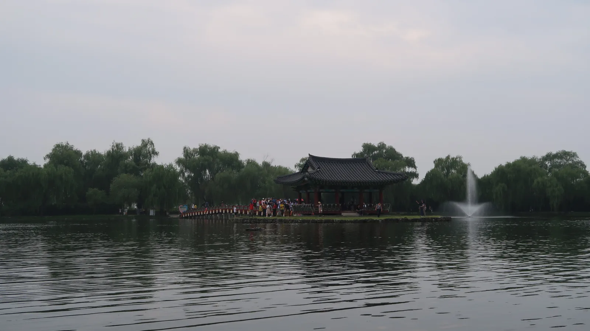
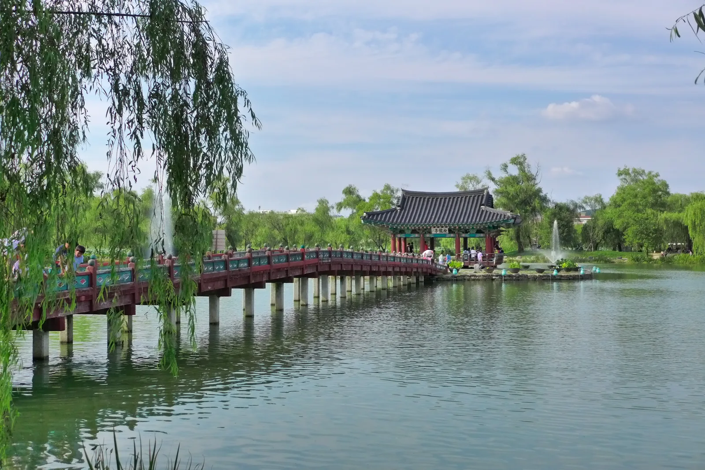
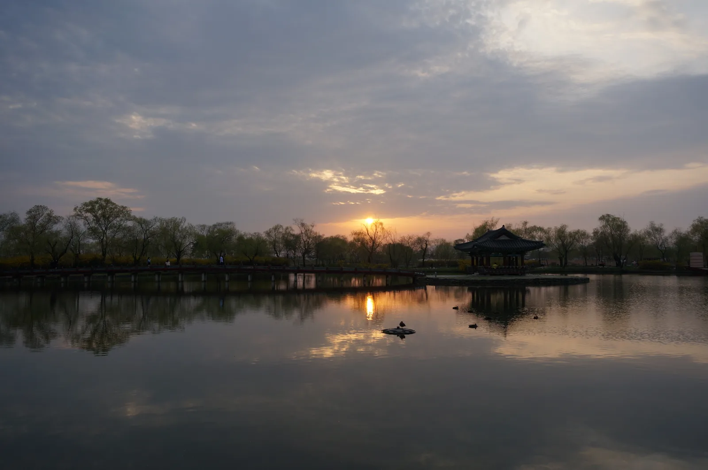
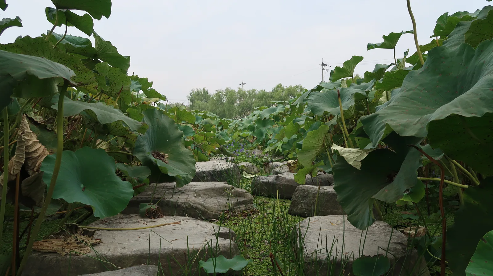
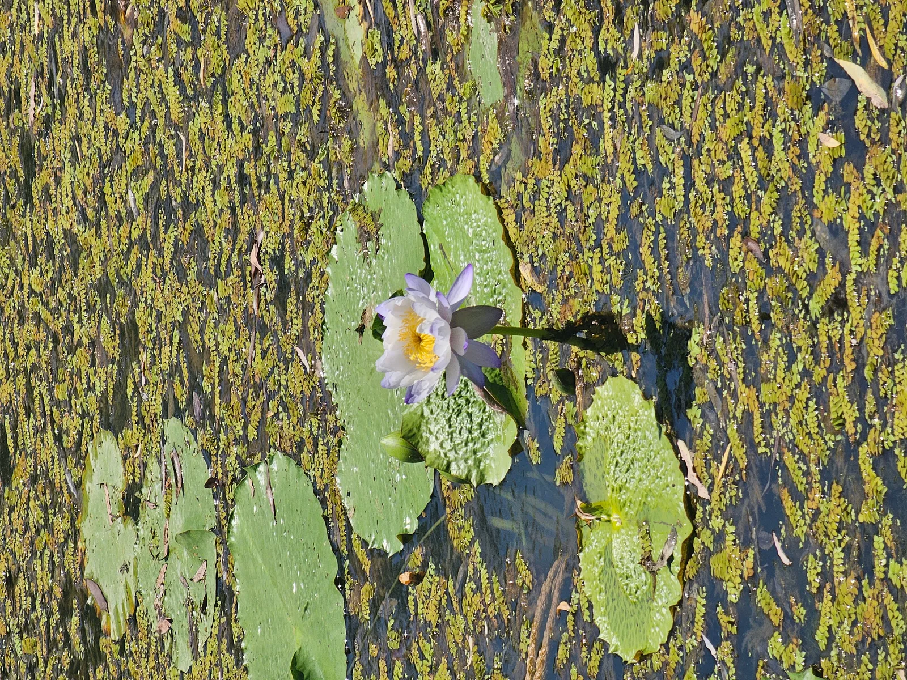

▲ 노을 무렵의 궁남지 포룡정. 연못 중앙 섬에 세워진 정자로 궁남지의 상징이다
『삼국사기』는 이렇게 기록한다. 백제 무왕 35년(634년), 왕이 궁궐 남쪽에 못을 파고 20여 리 밖에서 물을 끌어와 채운 뒤 못 가운데 섬을 만들고 주변에는 버드나무를 심었다고. 이렇게 조성된 못이 지금의 궁남지(宮南池)다. 우리나라에 남은 인공 연못 조경 중 가장 오래된 것으로 꼽히며, 1964년 사적 제135호로 지정됐다. 이름 없는 연못이 아니라 백제 무왕과 신라 선화공주의 사랑 이야기, 이른바 서동요 설화가 깃든 자리이기도 하다. 이 기사는 궁남지의 유래부터 서동공원 산책 동선, 야간 경관, 인근 부소산성·정림사지 연계까지 방문 전 알아두면 좋은 정보를 정리했다.
미리 보기
- 궁남지는 634년(백제 무왕 35년) 조성, 국내 최고(最古)의 인공연못 정원으로 사적 제135호
- 포룡정은 무왕의 출생 설화가 깃든 연못 중앙 섬의 정자
- 서동공원은 궁남지와 화지산을 아우르는 공원 명칭
- 매년 7월 부여서동연꽃축제가 열리며 입장료는 무료
1. 궁남지는 어떻게 생겨났나 — 634년, 백제 무왕의 정원

▲ 궁남지의 붉은 목조 다리와 포룡정. 다리 난간을 따라 늘어진 버드나무가 이 연못의 오랜 조경 방식을 보여준다 ⓒ Wikimedia Commons
『삼국사기』 백제본기에 따르면 무왕은 즉위 35년째 되던 해 궁궐 남쪽에 연못을 파도록 했다. 단순한 방죽이 아니라 20여 리(약 8km) 밖에서 물을 끌어와 채우고, 못 둘레에는 버드나무를 심고, 못 가운데는 섬을 조성한 본격적인 정원 연못이었다. 신라의 안압지(동궁과 월지)보다도 앞선 조경 기법으로 평가받으며, 이 때문에 궁남지는 흔히 '우리나라 최초의 인공 정원 연못'으로 소개된다. 조성 목적에 대해서는 왕실의 유흥 공간이었다는 설과, 궁궐 방어 및 조경을 겸한 시설이었다는 설이 함께 전해진다.
연못 이름의 '궁남(宮南)'은 말 그대로 '궁궐의 남쪽'이라는 뜻이다. 다만 정작 이 못이 어느 궁궐의 남쪽에 해당하는지는 아직 학계에서 완전히 합의되지 않았고, 인근 관북리 유적 등 백제 왕궁 관련 유구와의 연관성이 계속 조사되고 있다.
2. 서동요 설화 — 무왕의 탄생과 선화공주의 사랑
궁남지가 특별한 것은 단지 오래된 연못이어서가 아니다. 백제 무왕의 출생 설화와 서동요 이야기가 이 연못 자리에 겹쳐 전해지기 때문이다. 전설에 따르면 무왕의 어머니가 연못가에 홀로 살던 중 못에 사는 용과 인연을 맺어 무왕(어릴 적 이름 서동)을 낳았다고 한다. 연못 중앙 섬에 세워진 정자 포룡정(抱龍亭)이라는 이름도 '용을 품은 정자'라는 뜻으로 이 설화에서 비롯됐다.
서동은 신라 진평왕의 딸 선화공주가 아름답다는 소문을 듣고 신라 서라벌로 건너가, 공주가 밤마다 몰래 자신을 만난다는 내용의 노래 '서동요'를 아이들에게 부르게 해 퍼뜨렸다. 결국 이 노래 때문에 궁에서 쫓겨난 선화공주는 서동과 부부의 연을 맺게 됐고, 서동은 훗날 백제 30대 왕 무왕으로 즉위했다는 것이 향가 서동요에 얽힌 줄거리다. 역사적 사실 여부를 두고는 이견이 있지만, 궁남지와 서동공원 곳곳의 조형물·안내판은 이 설화를 모티프로 조성돼 있다.
3. 서동공원 둘러보기 — 궁남지와 화지산을 아우르는 공원

▲ 흐린 날 궁남지. 다리와 정자가 잔잔한 수면에 그대로 비친다 ⓒ Wikimedia Commons
궁남지와 인접한 화지산(花枝山) 일대를 묶어 부르는 이름이 서동공원이다. 부여읍 동남리에 위치하며, 부여시외버스터미널에서 도보로 이동 가능한 거리에 있어 대중교통으로도 접근이 어렵지 않다. 공원 안에는 궁남지 외에도 산책로와 조형물, 서동요 관련 스토리텔링 시설이 조성돼 있어 아이를 동반한 가족 단위 방문객도 부담 없이 둘러볼 수 있다. 연못 둘레를 따라 걷는 데는 큰 무리가 없을 만큼 평탄한 산책로가 이어진다.

▲ 연잎이 우거진 돌길 산책로. 여름철에는 연잎 사이로 걷는 듯한 풍경을 즐길 수 있다 ⓒ Wikimedia Commons
| 항목 | 내용 |
|---|---|
| 지정 문화유산 | 사적 제135호(1964년 지정) |
| 조성 시기 | 백제 무왕 35년(634년), 『삼국사기』 기록 |
| 지정 면적 | 210,881㎡(국가유산포털 기준) |
| 위치 | 충남 부여군 부여읍 궁남로 52 일대(서동공원) |
| 입장료·주차 | 무료 |
| 대표 시설 | 포룡정(연못 중앙 정자), 목조 다리, 연꽃·수련 군락 |
4. 연꽃과 야간 경관 — 여름 축제와 조명
궁남지는 여름철 연꽃이 절정에 이르는 7월 초순에 맞춰 '부여서동연꽃축제'를 연다. 2026년에는 7월 3일(금)부터 5일(일)까지 사흘간 열렸으며, 부여군과 (재)백제문화재단이 주최한다. 축제 기간에는 홍련·백련·수련·가시연 등 다양한 종의 연꽃과 수련이 일제히 피어나며, 축제장 전체가 오전 10시부터 밤 11시까지 개방되고 입장료는 무료다. 특히 해가 진 뒤 LED 조명과 포토존이 어우러지는 '야(夜)한밤에 궁남지' 구간은 연못과 다리, 포룡정이 조명을 받아 낮과는 전혀 다른 분위기를 낸다. 다만 축제 프로그램과 개장 시간은 해마다 달라질 수 있어 방문 전 부여군 문화관광 홈페이지에서 그해 일정을 확인하는 편이 안전하다.
부여군 문화관광 궁남지 페이지에서 확인 가능
▲ 궁남지에 피는 수련. 연꽃과 함께 여름철 궁남지를 대표하는 수생식물이다 ⓒ Wikimedia Commons
축제 기간이 아니더라도 궁남지는 사계절 무료로 개방된다. 해 질 무렵 포룡정과 다리가 노을에 물드는 풍경은 연꽃철이 아니어도 사진 명소로 꼽히며, 이른 아침이나 늦은 오후 방문객이 적은 시간대를 노리면 한적하게 산책할 수 있다.

▲ 버드나무 가지 아래로 이어지는 궁남지 산책로. 양옆으로 연잎이 빼곡히 들어차 있다 ⓒ Wikimedia Commons
5. 연계 관광 — 부소산성·정림사지와 함께 도는 백제 역사여행
궁남지 하나만 보고 돌아가기는 아쉽다. 부여읍내에는 백제 사비 시대의 핵심 유적인 부소산성과 정림사지(정림사지 오층석탑)가 자동차로 10분 안팎 거리에 몰려 있어, 하루 일정으로 함께 묶는 여행객이 많다. 부소산성은 사비도성을 지키던 방어 시설이자 낙화암·고란사 등 백제 멸망사의 현장이 있는 곳이고, 정림사지는 국보 제9호 오층석탑이 남아 있는 백제 사찰터다. 궁남지·서동공원까지 더하면 백제 왕도 사비의 궁궐·사찰·산성을 하루에 둘러보는 코스가 완성된다.
실제로 여러 여행 기사에서도 정림사지 오층석탑, 왕릉원(능산리고분군), 서동공원과 궁남지를 묶어 '과거에서 현재로 이어지는 백제 역사여행'으로 소개하고 있다. 순서는 취향에 따라 달라질 수 있지만, 아침 일찍 부소산성에서 시작해 정림사지를 거쳐 오후 늦게 궁남지에서 노을을 보는 동선이 무리 없이 하루 안에 소화된다.
✅ 부여 궁남지·서동공원, 가기 전 체크리스트
· 궁남지는 백제 무왕 35년(634년) 조성, 국내 최고(最古)의 인공연못 정원, 사적 제135호(지정 면적 210,881㎡)
· 포룡정은 무왕 출생 설화가 깃든 연못 중앙 섬의 정자, '서동요' 설화의 배경지
· 서동공원은 궁남지와 화지산을 아우르는 명칭, 부여시외버스터미널에서 도보 접근 가능
· 매년 7월 부여서동연꽃축제 개최, 야간에는 LED 조명 경관 연출
· 입장료·주차 모두 무료, 사계절 개방
· 부소산성·정림사지와 함께 묶어 백제 역사여행 하루 코스로 구성 가능